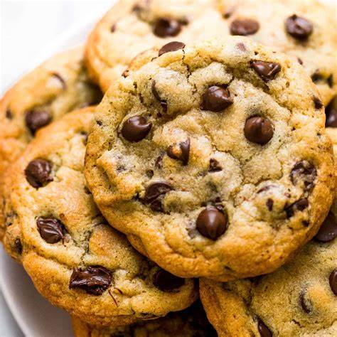

Classic Chocolate Chip Cookies
A classic chocolate chip cookie recipe is a timeless favorite that brings comfort and joy with every bite.
With its perfect balance of crispy edges and a soft, chewy center, this cookie is packed with rich chocolate
chips that melt in your mouth. Whether you're a seasoned baker or a beginner in the kitchen, this simple yet
delicious recipe will satisfy your sweet tooth and leave you craving more. It's perfect for sharing with family,
friends, or enjoying on your own with a glass of cold milk!
Ingredients:
- 1 cup (2 sticks) unsalted butter, softened
- 3/4 cup granulated sugar
- 3/4 cup packed brown sugar
- 1 teaspoon vanilla extract
- 2 large eggs
- 2 1/4 cups all-purpose flour
- 1 teaspoon baking soda
- 1/2 teaspoon salt
- 2 cups semisweet chocolate chips
- 1 cup chopped nuts (optional)
Steps:
- Preheat the oven to 375°F (190°C). Line baking sheets with parchment paper or silicone baking mats.
- In a large mixing bowl, cream together the softened butter, granulated sugar, brown sugar, and vanilla
extract until light and fluffy.
- Add the eggs, one at a time, beating well after each addition.
- In a separate bowl, whisk together the flour, baking soda, and salt. Gradually add the dry ingredients to
the wet ingredients, mixing until just combined.
- Stir in the chocolate chips and chopped nuts (if using) until evenly distributed throughout the dough.
- Drop rounded tablespoons of dough onto the prepared baking sheets, spacing them about 2 inches apart.
- Bake in the preheated oven for 9 to 11 minutes, or until the edges are golden brown.
- Remove from the oven and allow the cookies to cool on the baking sheets for a few minutes before
transferring them to wire racks to cool completely.
Visit this site for official
recipe!
Don't forget to enjoy your Class Chocolate Chip Cookies with a tall glass of milk – the perfect
combination!
